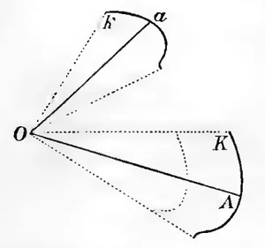

Methods and Theories for Geometrical Constructions¶
Applied to 410 Problems — Julius Petersen (1866 / 1879)
“Method is my principal object. It has been my endeavour to systematize these methods and display them in clear, elementary form so that the beginner may learn how to attack a proposed problem methodically rather than by blind trial.”
—Julius Petersen, Methods and Theories, Preface (1879), pp. 1–2
Table of Contents¶


Chapter III — The Theory of Revolution
Chapter III — The Theory of Revolution (pp. 70–94, §§ 1–5 & Problems 349–402)
Petersen Master Cross-Repository Concordance
Petersen Locus / Heuristic Operation
Bibliography
Teubner, Leipzig, 1899.
Glossary
Petersen’s heuristic starting rule (p. 4): assume the construction problem already solved, draw a figure representing the solved configuration, and examine the relations linking given and sought elements until a constructible sub-figure or pair of loci emerges.
Scholarly Apparatus¶
Petersen Master Cross-Repository Concordance — Mapping Petersen’s heuristic loci, transformations, circle systems, and constructibility criteria across
geometor/altshiller-court,geometor/euclid,geometor/elements,geometor/hilbert,geometor/pappus,geometor/lemoine, andgeometor/etc.Systematic Bibliography — Primary Danish/English/French/German editions, classical treatises, and modern heuristic descendants.
People — Ancient and modern geometers cited across the 410 problems and commentary.
Technical Glossary of Constructive Geometry — Bilingual Danish/English/Greek analytical and transformational vocabulary.